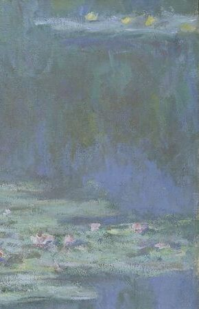

Pagina mea

Salutare. Mă numesc Ecaterina Paximadi și am 16 ani.
Frecventez Liceul Teoretic ”Dante Alighieri”, clasa a X-a. Îmi place să citesc, să privesc filme, să fac
plimbări în natură și, cel mai mult, să pictez pe pânză. De asemenea, practic cântatul la chitara electrică,
acustică și chitara bass.
Sunt născută în Chișinău, pe data de 23 iunie 2005. Consider că sunt creativă și îmi place mult să mă exprim
prin artă.